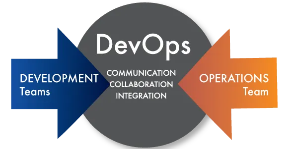
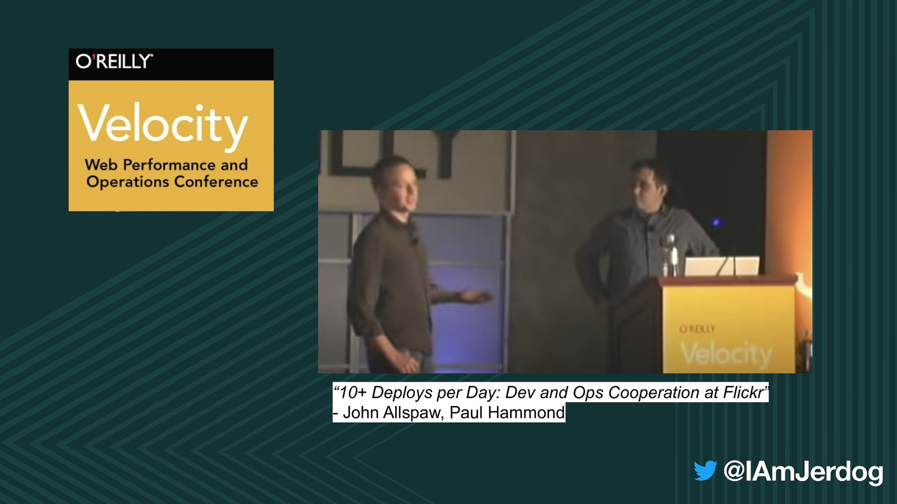
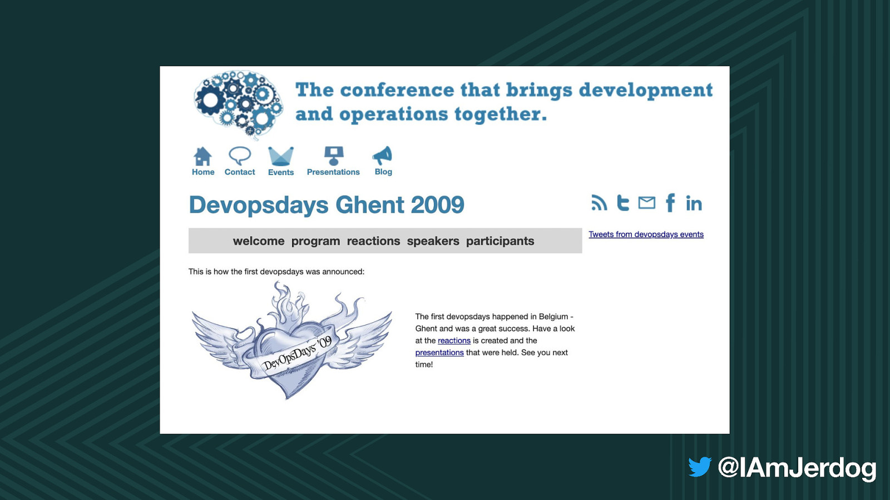
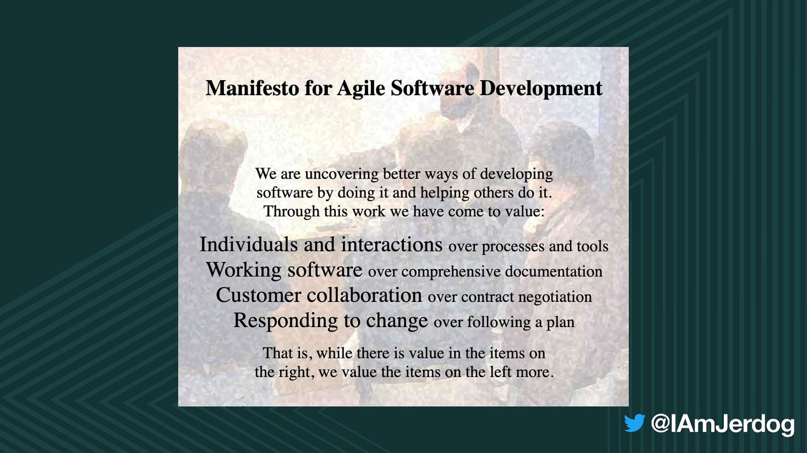
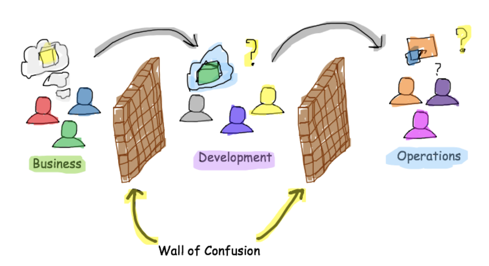
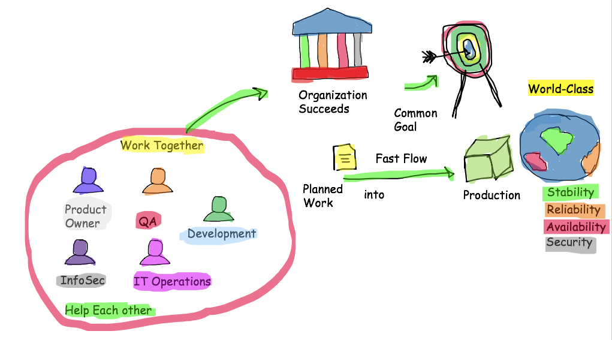
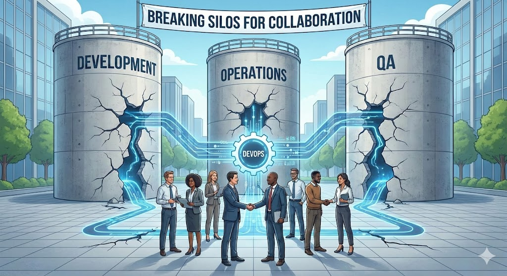

Welcome to Practical DevOps!
The first chapter of this book will deal with the background of DevOps and setting the scene for how DevOps fits into the wider world of Agile systems development.
An important part of DevOps is being able to explain to coworkers in your organization what DevOps is and what it isn't.
The faster you can get everyone aboard the DevOps train, the faster you can get to the part where you perform the actual technical implementation!
DevOps is, by definition, a field that spans several disciplines. It is a field that is very practical and hands-on, but at the same time, you must understand both the technical background and the nontechnical cultural aspects. This book covers both the practical and soft skills required for a best-of-breed DevOps implementation in your organization.
The word "DevOps" is a combination of the words "development" and "operation".
This wordplay already serves to give us a hint of the basic nature of the idea behind DevOps. It is a practice where collaboration between different disciplines of software development is encouraged.
The origin of the word DevOps and the early days of the DevOps movement can be tracked rather precisely: Patrick Debois is a software developer and consultant with experience in many fields within IT. He was frustrated with the divide between developers and operations personnel. He tried getting people interested in the problem at conferences, but there wasn't much interest initially.
In 2009, there was a well-received talk at the O'Reilly Velocity Conference: "10+ Deploys per Day: Dev and Ops Cooperation at Flickr." 
Patrick then decided to organize an event in Ghent, Belgium, called DevOpsDays.
This time, there was much interest, and the conference was a success. The name "DevOpsDays" struck a chord, and the conference has become a recurring event. DevOpsDays was abbreviated to "DevOps" in conversations on Twitter and various Internet forums.
The DevOps movement has its roots in Agile software development principles. The Agile Manifesto was written in 2001 by a number of individuals wanting to improve the then current status quo of system development and find new ways of working in the software development industry. The following is an excerpt from the Agile Manifesto, the now classic text:

In light of this, DevOps can be said to relate to the first principle, "Individuals and interactions over processes and tools."
This might be seen as a fairly obviously beneficial way to work—why do we even have to state this obvious fact? Well, if you have ever worked in any large organization, you will know that the opposite principle seems to be in operation instead.
Walls between different parts of an organization tend to form easily, even in smaller organizations, where at first it would appear to be impossible for such walls to form.
DevOps, then, tends to emphasize that interactions between individuals are very important, and that technology might possibly assist in making these interactions happen and tear down the walls inside organizations.
A very simple example might be the choice of systems used to report bugs. Quite often, development teams and quality assurance teams use different systems to handle tasks and bugs. This creates unnecessary friction between the teams and further separates them when they should really focus on working together instead. The operations team might, in turn, use a third system to handle requests for deployment.
An engineer with a DevOps mindset will immediately recognize all three systems as workflow systems with similar properties. It should be possible for everyone in the three different teams to use the same system, perhaps tweaked to generate different views. A further benefit is reduced maintenance costs.
Another core goal of DevOps is automation and Continuous Delivery. Simply put, automating repetitive and tedious tasks leaves more time for human interaction, where true value can be created.
The turnaround for DevOps processes must be fast. We need to consider time to market in the larger perspective, and simply stay focused on our tasks in the smaller perspective. This line of thought is also held by the Continuous Delivery movement.
As with many things Agile, many of the ideas in DevOps and Continuous Delivery are in fact different names of the same basic concepts. There really isn't any contention between the two concepts; they are two sides of the same coin.
DevOps engineers work on making enterprise processes faster, more efficient, and more reliable. Repetitive manual labor, which is error prone, is removed whenever possible.
It's easy, however, to lose track of the goal when working with DevOps implementations. Doing nothing faster is of no use to anyone. Instead, we must keep track of delivering increased business value.
For instance, increased communication between roles in the organization has clear value. Product owners may want to see progress regularly. Delivering incremental improvements quickly to test environments supports this need.
Another perspective: If you ever find yourself waiting too long, something is wrong with your tools or processes. If you are watching robot balloon-shooting videos during compile time, your compile times are too long!
The same applies to teams waiting for manual deploys. This idling is extremely expensive. We must help unlock creative potential by eliminating unnecessary overhead.
There are several different cycles in Agile development, from Portfolio level through Scrum and Kanban cycles down to Continuous Integration. Kanban emphasizes the 24-hour cycle and is popular in operations teams. Scrum cycles are 2–4 weeks and used by development teams. Longer cycles, such as Program Increments, span several sprints and are part of the SAFe framework.
DevOps must support all these cycles, because DevOps is fundamentally about cooperation between disciplines in an Agile organization.
The most obvious and measurable benefits of DevOps occur in the shorter cycles, which then improve the longer cycles.
Richard Feynman coined the term “cargo cult science” to describe imitating the form of something while missing the essence—similar to Melanesian islanders building imitation runways expecting planes to return.
We are not Agile just because we hold morning stand-ups. We are not doing DevOps just because we installed Puppet that only operations knows how to use.
It is vital to keep track of goals and continuously question whether our activities bring value. Agile frameworks help with this, but only if feedback loops—such as Scrum retrospectives—are taken seriously.
A common issue is that retrospective findings never get acted on, often because the root causes lie elsewhere in the organization. This reduces the effectiveness of Agile processes.
DevOps helps solve this by emphasizing cooperation between roles and breaking silos.
Use Agile mechanisms such as retrospectives, but don’t treat these methods as gospel. Adapt based on what works for your team.
All managers follow instructions to develop a service strategy that ensures the company can manage all associated costs and risks. There are multiple roles involved in service strategy, defined as follows:
Service operation includes technical support teams and application management that respond when an issue impacts the business.
It involves developing the service’s architecture and translating the business needs into technical requirements.
In this stage, all assets are controlled to deliver a complete testing and integration service.
It is a reflective approach that involves four stages to ensure services remain aligned with the business’s demands.
This section explains how DevOps and other ways of working coexist and fit together in a larger whole.
DevOps aligns well with many Agile and Lean frameworks. SAFe specifically mentions DevOps. There is usually no conflict between Agile practices and DevOps.
The situation is different with ITIL. ITIL is used by large and mature organizations to formalize many life cycle processes. DevOps and Continuous Delivery advocate small, frequent changes, and ITIL can appear opposite—but this is not accurate.
Large monolithic legacy systems require structured processes such as ITIL. Many organizations work with such systems.
Many ITIL practices map directly to DevOps concepts. ITIL prescribes configuration management and CMDBs, which are also essential in DevOps.
| Parameters | DevOps | ITIL |
|---|---|---|
| Purpose / Delivery Focus |
DevOps focuses on speeding up software delivery by improving collaboration between Development (Dev) and Operations (Ops) teams. It reduces delays and enables faster releases.
|
ITIL (IT Infrastructure Library) focuses on aligning IT services with business needs. It ensures services are delivered in a structured, consistent, and managed way.
|
| Lifecycle Stages |
DevOps follows a continuous, iterative lifecycle:
1. Development – Write code 2. Testing – Validate code 3. Integration – Combine changes 4. Deployment – Release to production 5. Monitoring – Track performance & issues |
ITIL follows a service-oriented lifecycle:
1. Service Strategy – Plan which services are needed 2. Service Design – Design the service 3. Service Transition – Build and deploy the service 4. Service Operation – Manage day-to-day operations 5. Continual Service Improvement – Improve services over time |
| Change Management |
Changes are anticipated early and integrated throughout the development cycle, enabling frequent updates and rapid releases with automation and testing.
|
ITIL prescribes a formal Change Management process: every change is reviewed, approved, scheduled, and documented to reduce risk and preserve stability.
|
| Main Goal |
Improve collaboration, increase automation, speed up delivery, and enable continuous feedback and improvement.
|
Standardize IT service management to deliver reliable, consistent, and high-quality IT services that meet business requirements.
|
| Approach |
Collaborative + automated. Breaks down silos using tools and pipelines (e.g., Git, CI servers, containers, infrastructure-as-code).
|
Process-driven + structured. Emphasizes documented policies, roles, and best practices for managing IT services.
|
| Services Handling |
Focus on CI/CD (Continuous Integration & Continuous Delivery) to build, test, and deploy rapidly and reliably.
|
Focus on creating, testing, managing, and supporting IT services end-to-end so they meet agreed service levels and business needs.
|
| Speed vs Control |
Prioritizes speed, automation, and frequent updates.
|
Prioritizes control, stability, risk reduction, and compliance.
|
| Team Culture |
Encourages open communication, shared responsibility, and fast feedback loops.
|
Emphasizes clear roles, documented responsibilities, and formal agreements (SLAs).
|
| Typical Use Cases |
Fast-paced environments such as startups, SaaS product teams, and cloud-native applications.
|
Large organizations needing stable, regulated IT environments: banking, telecom, healthcare, government, and enterprises.
|
This chapter presented a brief overview of the background of the DevOps movement. We discussed the history of DevOps and its roots in development and operations, as well as in the Agile movement. We also explored how ITIL and DevOps coexist in large organizations. The cargo cult anti-pattern was explained and the importance of avoiding it. You should now understand where DevOps fits in the larger Agile context and how it supports Agile development cycles.
We will gradually move toward more technical and hands-on subjects. The next chapter will present an overview of what the technical systems we tend to focus on in DevOps look like.